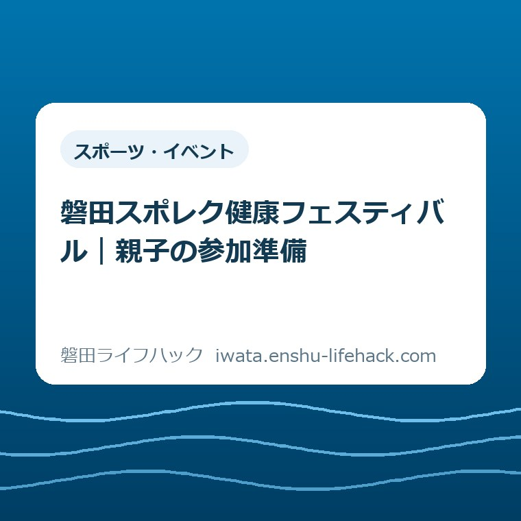
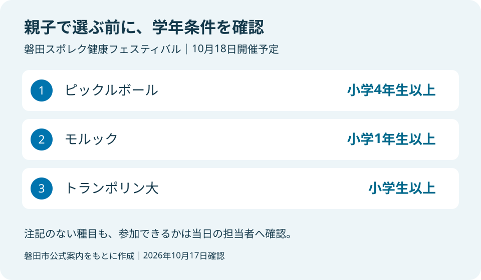
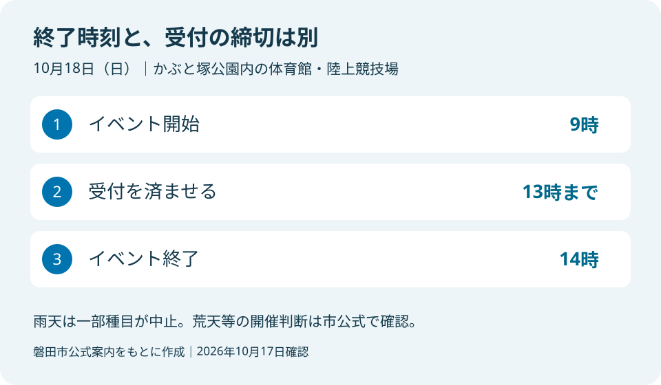

スポーツ・イベント
磐田スポレク健康フェスティバル｜親子の参加準備

この記事の要点
Q. 明日のスポレクに親子で行くには、何を準備すればよい？
A. 磐田スポレク健康フェスティバルは2026年10月18日9～14時、かぶと塚公園内で開催予定です。市内在住・在勤・在学者が対象で、申込不要・無料。受付は13時までです。種目によって年齢条件や雨天時の扱いが異なります。今日の準備は、子どもの学年に合う種目を一つ選ぶことです。
前日の準備は、行きたい種目を一つ選ぶところから
休日の外出には、仕事の予定、洗濯、食事、きょうだいの用事を合わせる手間があります。無料の催しでも、家族が家を出られるまでの準備は無料にはなりません。案内を読む時間も、持ち物をそろえる時間も、すでに保護者が引き受けている負担です。
この記事は、2026年10月18日に開かれる磐田スポレク健康フェスティバルの参加準備を扱います。参加条件は種目や子どもの学年によって変わります。「子どもから大人まで参加できる」という全体の案内と、各ブースでできることは分けて確認してください。
私は大石浩之（磐田市／不動産業）です。家族の段取りを考える立場から、前日に必要な判断を整理します。ここで提案する準備の順番は私の考えです。現地を下見した報告や、参加者から聞いた体験談ではありません。
今日の一歩は、公式の種目一覧を子どもと見て、学年に合う「やってみたい種目」を一つ選ぶことです。会場を全部回る計画まで完成させる必要はありません。最初の目的が決まれば、出発時刻や雨の日の判断も家族で話しやすくなります。
開催時間は14時まで、受付は13時まで
磐田市の「令和8年度磐田スポレク健康フェスティバル」によると、開催日は2026年10月18日の日曜日です。時間は9時から14時までですが、受付は13時までに済ませるよう案内されています。終了時刻だけを予定表へ入れないようにしてください。
会場は、かぶと塚公園内の磐田市総合体育館と陸上競技場です。対象は磐田市に在住・在勤・在学の方。申込みは不要で、参加料は無料です。事前の申込フォームを探して入力する手続きは、この催しにはありません。
一方、申込みが不要でも当日の受付はあります。13時に公園へ着く予定では、駐車や移動の時間を見込めません。自宅からの所要時間は出発地や交通状況で変わるため、この記事で一律の出発時刻は決めません。家族の移動に必要な時間を加えて考えるのが私の提案です。
受付の締切までに着けば、すべての種目を体験できるという意味でもありません。各ブースの待ち時間や当日の混雑は、確認した公式ページには載っていません。予定を詰めるより、到着後に目的のブースの案内を確かめる余地を残しておくと動きやすくなります。
また、市内の参加対象に当てはまるか、同行者の条件で迷う場合は市の案内を確認してください。市外から来る親族などについて、在住・在勤・在学という記載を広げて参加可能と断定はできません。家族全員の条件が同じとは限らないためです。
年齢条件を先に読むと、きょうだいの予定を組みやすい
市公式の実施種目一覧では、ピックルボールは小学4年生以上、モルックは小学1年生以上とされています。トランポリンには「トランポリン大は小学生以上」という注記があります。種目名だけを子どもに伝える前に、この条件まで一緒に見ておきたいところです。
| 種目 | 記載された条件 |
|---|---|
| ピックルボール | 小学4年生以上 |
| モルック | 小学1年生以上 |
| トランポリン大 | 小学生以上 |
例えば小学2年生と小学5年生のきょうだいなら、ピックルボールの記載条件に当てはまるのは上の子です。モルックの学年条件には二人とも当てはまります。ただし、これは学年条件の読み方の例であり、当日の実施や参加枠を保証するものではありません。
未就学児がいる家庭は、年齢の注記がない種目を「必ず参加できる」と読み替えないでください。一覧にはボッチャ、フロート・パラバルーン、ミニゲームなどもありますが、用具や実施方法に応じた案内は現場で確かめる必要があります。記載がないことと、制限がないことは別です。

私なら、きょうだい全員が同じ競技をすることを最初から目標にはしません。まず一つの候補を決め、下の子が参加できない場合に誰が付き添うかを話します。大人が一人で連れて行く家庭なら、別々の場所へ分かれずに済む候補を選ぶほうが、見守りの段取りを組みやすいと考えます。
親が競技の上手さを先回りして判断する必要もないと思います。「どれなら勝てそうか」ではなく、「どの道具を使ってみたいか」と聞けば、初めての種目を選ぶ余地ができます。これは参加条件ではなく、私からの家庭での相談の提案です。
体力テストやチェックのブースも予定されていますが、その場の結果だけで健康状態を自己判断する記事にはしません。体調に不安があるときは参加を優先せず、必要に応じて医療の専門家へ相談してください。体験の機会と個別の健康判断は分けて扱います。
会場の住所と、当日の駐車場を分けて確認する
市の施設ガイドでは、かぶと塚公園の所在地は磐田市見付4075-1です。磐田警察署の東側にある公園と案内されています。イベント名で地図を探せないときも、公園名と住所を手がかりに場所を確かめられます。
イベント当日の一般向け駐車場として、市は公園内の各駐車場とiプラザ東側駐車場を案内しています。公園正面駐車場内には障がい者専用の駐車スペースがあります。台数には限りがあるため、乗り合いへの協力も呼びかけられています。
駐車場の案内があることは、希望する時刻に空きがあることを意味しません。この記事では空車状況や待ち時間を確認できていません。満車を前提に遠回りを決める必要はありませんが、家族の到着予定を受付締切ぎりぎりに置かない理由にはなります。
駐車してから受付までの移動も外出の一部です。小さな子どもや移動に配慮が必要な家族がいる場合は、車を降りた後の付き添いまで考えたいところです。施設ガイドには車いす対応の出入り口やトイレの表示がありますが、当日の利用動線は現地の案内で確認してください。
施設の普段の使い方を確認したい場合は、かぶと塚公園のスポーツ施設の案内も参考になります。ただし、通常の利用料金や開館時間を、そのまま10月18日の催しの条件に当てはめないでください。イベントの時間・参加料は専用の公式案内を使います。
服装は公式の指定を確認し、雨なら目的の種目を見直す
市が注意事項として示している服装は、運動ができる服装です。サンダルは不可と明記されています。家を出る前に靴まで確かめておくと、会場へ着いてから準備をやり直す事態を避けやすくなります。
飲み物やタオル、気温に応じて調整できる上着を用意するのは、私からの準備の提案です。公式の必須持ち物一覧として紹介しているわけではありません。また、確認したページでは室内履きの要否を判断できませんでした。体育館に入る際の履物の扱いは、公式の追加案内や現地で確認してください。
雨天時には中止となる種目があります。市公式の雨天中止欄には、モルック、アーチェリー、ウォーキングフットボール、50m走などが挙げられています。屋外でやりたい種目を選んだ家庭は、雨なら同じ予定で体験できるとは考えないほうが確実です。
雨天で一部種目が中止になることと、荒天等でイベント全体が中止になることは別の案内です。屋内の会場があるから必ず開催すると断定はできません。10月17日時点の記事だけで翌日の天候や開催判断を保証することもできません。出発前は市公式ページの更新を確認してください。

雨の日の別案を家族で考えるなら、磐田市のスポーツ施設の選び方を読む方法もあります。ただし別施設の当日の空きや利用可否まで確定するものではありません。「イベントが中止なら、別施設へ予約なしで入れる」という置き換えはしないでください。
市は、イベントでのけが等には応急処置のみ対応すると案内しています。また、撮影した写真や動画を募集チラシや市ホームページ等へ掲載する場合があるとしています。参加する家族に共有しておき、撮影について気になることは会場の担当者へ確認するのがよいと考えます。
良い点は、申込の手間をかけずに試せること
私が良い点と考えるのは、無料であることに加え、事前申込が不要なことです。家族の予定が直前まで確定しにくい家庭でも、申込期限に間に合わなかったという理由で候補から外す必要がありません。対象条件と当日の受付時刻は守りながら、前日に相談できる余地があります。
複数のスポーツが一つの催しに集まる点も、家族の移動の負担を考えると助かります。種目ごとに別の日、別の会場へ行く計画を立てる前に、道具や雰囲気に触れる入口になります。ここで興味が続くかを確かめ、継続して取り組むかは後で考える順番でもよいと思います。
市は当日配布のスタンプラリー台紙を参考にブースを回るよう案内しています。スタンプを5個以上集めた方には参加賞があるとされています。家族の楽しみになりますが、参加賞の条件を外出の達成目標にしなくてもよい、というのが私の判断です。
「無料だから全部体験しないともったいない」と考えると、子どもの疲れや大人の帰宅後の用事が後回しになります。参加料の安さだけで満足度は決まりません。一つ試して、楽しかったことを話しながら帰れるなら、その家族に合った使い方だと私は考えます。
注文したい点は、家族ごとの条件を探す手間
私が注文したい点は、年齢条件、受付時刻、雨天中止種目、駐車場の案内を、保護者が自分で結びつける必要があることです。それぞれの情報は市公式ページにあります。それでも、きょうだいの学年が異なる家庭では、一度読むだけで当日の動きを決められるとは限りません。
例えば「小学4年生未満の子と一緒なら、どこで最初に確認するか」という形の案内が加わると、読み手の手間は減ると思います。すべての家庭向けの行程表を市に求めたいわけではありません。年齢条件の一覧を受付や入口でも見つけやすくするだけで、期待と現場の行き違いを減らせると考えます。
公式ページには表記を照合したい箇所もあります。実施種目の欄には「走り幅跳び」、雨天中止の欄には「立ち幅跳び」と記載されています。この記事で同じ競技だと決めつけることはしません。跳躍種目を目的にする方は、当日の実施内容を担当者へ確認してください。
こうした確認は、市の情報が使えないという話ではありません。参加条件を細かく書いてあるからこそ、家族に合うかを出発前に考えられます。その良さを生かし、読み手が自分の条件へ置き換える最後の手間を少し減らしてほしい、という一事業者としての意見です。
対案・結論――最初の一種目を家族のメモにする
私の提案は、「子どもの学年」「最初に試したい種目」「雨なら再確認」という短いメモです。全部のブースを列挙する必要はありません。候補を一つ選び、その年齢条件を横に書くだけで、会場で何から確かめるかが見えます。
そのメモを一緒に行く大人へ共有しておけば、当日に別々の説明を子どもへすることも減らせます。予定の中心は一つの体験でよく、受付後は台紙と会場の案内を見て調整する形です。事前に作った順番を守るために、疲れた子を急がせる必要はありません。
陸上競技場での体験から、普段の運動に興味がつながることもあると思います。その後の個人利用は、磐田市陸上競技場の利用案内で別に確認してください。今回の無料イベントと、別の日の通常利用は、料金や手続きを混ぜないことが大切です。
当日に何種目できたかを、家族同士で競う必要もありません。「初めて見た道具があった」「次はあれを試したい」という話が一つ残れば、次の外出を決める材料になります。私なら、帰宅後の予定を守れる範囲で楽しむことを優先します。
大石の視点――参加料が無料でも、家族の時間はなくならない
私は、催しを紹介するときほど、参加費の外側にある手間を数えたいと考えます。家を出る支度、移動、きょうだいの見守り、帰ってからの食事。その負担を引き受ける人がいるから、子どもが新しい体験へ向かえます。無料という言葉だけで外出を勧めるのは足りません。
一方で、候補を絞りすぎれば、現地で初めて出会う面白さを減らすかもしれません。私にも、その加減には迷いがあります。そこで、最初の一つだけ決めて、残りは会場で選ぶ。その程度の準備が、段取りと偶然の楽しさを両立しやすいと考えています。
今日できることは、学年に合う種目を一つ、子どもと選ぶことです。参加を決めきれなくても、その確認ができれば準備は進んでいます。条件や当日の運営は変わる場合があります。最終的な参加判断の前に、必ず磐田市の公式ページで最新情報を確認してください。
よくある質問
申込みをしていなくても参加できますか？
市公式では申込み不要・参加無料です。対象は磐田市在住・在勤・在学の方で、2026年10月18日の受付は13時までに済ませる案内です。開催時間は9～14時。申込不要と受付不要は別なので、当日は会場の案内に従ってください。混雑状況や各ブースの参加可否まで保証するものではありません。
未就学児やきょうだいも同じ種目に参加できますか？
種目ごとに条件が異なります。ピックルボールは小学4年生以上、モルックは小学1年生以上、トランポリン大は小学生以上と記載されています。年齢注記のない種目も、未就学児が必ず参加できるとは断定できません。きょうだいの学年を照合し、参加可否や付き添いの扱いは当日の担当者へ確認してください。
雨の日も開催されますか？
市公式では雨天中止となる種目があり、モルックや50m走などが記載されています。さらに、荒天等ではイベント全体が中止になる場合があります。屋内会場があることだけで開催確定とは判断できません。この記事は天候や当日の開催を保証しないため、出発前に市公式ページで最新の案内を確認してください。
参考にした公式情報
- 令和8年度磐田スポレク健康フェスティバル（10月14日更新）／磐田市（2026年10月17日確認）
- 施設ガイド・かぶと塚公園（2025年3月3日更新）／磐田市（2026年10月17日確認）
最終確認日：2026-10-17 ／ 本記事は公表情報と執筆者の見解を分けて記載しています。制度・数値・公開状況は変更される場合があるため、最新情報は磐田市公式ページでご確認ください。